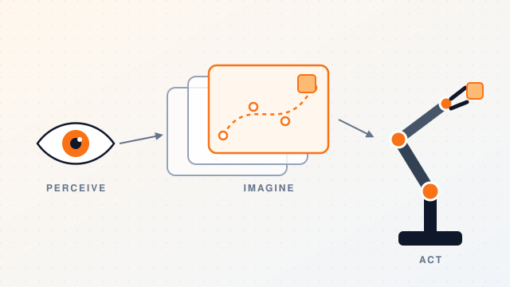

OPAL Lab & Robot Foundation Models
Current workBuilding robot foundation models at Luma’s Open Science Physical AI Lab (OPAL), which researches methods for generalization in physical AI and world models that understand and act in the physical world — the Perceive → Imagine → Act loop, applied to robots.